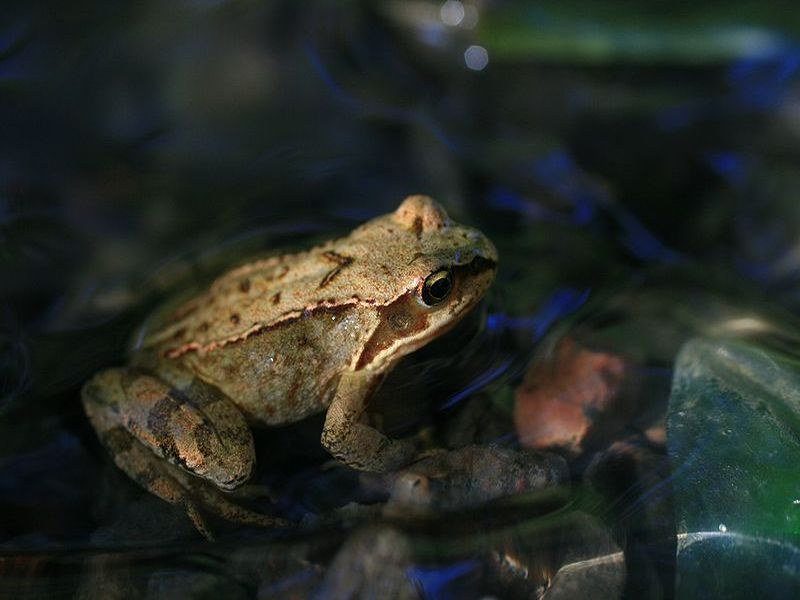

Moorfrosch
Rana arvalis
Er ist mit dem Grasfrosch nahe verwandt und von diesem nur schwer zu unterscheiden. Als Faustregel gilt: Moorfrösche sind "Braunfrösche" mit hellem Rückenstreifen! Die bei uns recht seltene Lurchart wurde bisher lediglich am Rande des Hochmoores beobachtet.